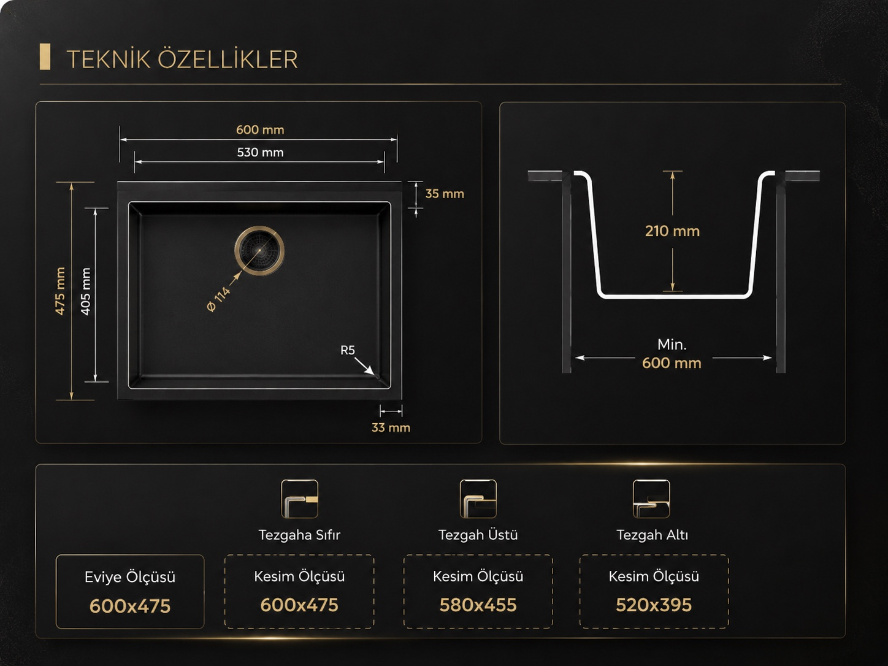

K012 GORDION 60
K Serisi Granit Evye
K012 Gordion 60, dengeli 60 cm formu ve kullanışlı tek haznesiyle mutfakta verimli bir çalışma alanı sunar. Dayanıklı granit yüzeyi, üç farklı montaj seçeneği ve altı seçkin rengiyle modern mutfaklara uyum sağlar.
Renk Seçenekleri
Siyah
Antrasit
Gri
Beyaz
Krem
Kapuçino
Öne Çıkan Özellikler
- Kompakt ve Dengeli Form60 cm ölçüsü, dar ve orta büyüklükteki mutfaklarda tezgâh alanını verimli kullanmaya yardımcı olur.
- Kullanışlı Tek HazneGeniş iç hacmi, günlük bulaşıkların ve büyük mutfak gereçlerinin rahatça yıkanmasını kolaylaştırır.
- Esnek Montaj SeçenekleriTezgaha sıfır, tezgah üstü ve tezgah altı montaja uygun ölçüleriyle farklı mutfak projelerine uyum sağlar.
- Dayanıklı ve Kolay Temizlenen YüzeySağlam granit yapısı yoğun kullanıma dayanırken pürüzsüz yüzeyi günlük temizliği kolaylaştırır.
Teknik Özellikler
- Ürün Ölçüsü: 600x475
- Tezgaha Sıfır Kesim Ölçüsü: 600x475
- Tezgah Üstü Kesim Ölçüsü: 580x455
- Tezgah Altı Kesim Ölçüsü: 520x395
Renk Ürün Kodları
- Siyah / Ürün Kodu: K1266010113
- Antrasit / Ürün Kodu: K1266010117
- Gri / Ürün Kodu: K1266010115
- Beyaz / Ürün Kodu: K1266010111
- Krem / Ürün Kodu: K1266010121
- Kapuçino / Ürün Kodu: K1266010119
Teknik Çizim
